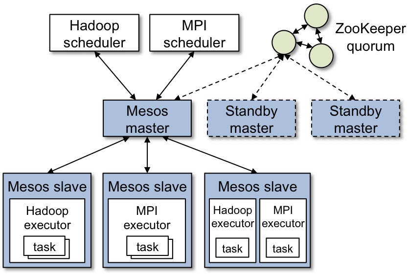

Introduction to
Created by @jmarinotero
Juan Marin Otero
- Software engineering for the past 15 years
- GIS & Open Source
- Now: Solutions Architect for HMDA Operations
- Previously:
- CTO at Boundlessgeo
- Lead Developer for National Broadband Map at FCC
- Solutions Engineer at Esri
The need to scale: Cloud Native Applications
- Aware of infrastructure, scales resources up and down appropriately
- Doesn't assume much about users and environment. Expects failure
- Cost aware, adapts to different runtime conditions
- Resilient to disaster
- Can be deployed to multiple infrastructure options
- Incremental deployment, completely testable
For more, see this
12 factor apps
- Use declarative formats for setup automation, to minimize time and cost for new developers joining the project
- Have a clean contract with the underlying operating system, offering maximum portability between execution environments
- Are suitable for deployment on modern cloud platforms, obviating the need for servers and systems administration
- Minimize divergence between development and production, enabling continuous deployment for maximum agility
- And can scale up without significant changes to tooling, architecture, or development practices
HMDA
- Large data collection (tens of millions of records)
- Many entities submit data (several thousand)
- 30 years of historical data
- Schema has changed several times; it's changing again
- Three main work streams: data intake, data management and publication
- It's a distributed system
Additionally:
- Minimize time to market
- Cost effective (budget)
- Reactive manifesto: responsive, resilient, elastic and message driven
- We will log everything
- We will measure everything
Not a website
This won't work
This is better, but still not good enough
Microservices
Main idea: loosely coupled, narrowly focused services that can be deployed independently
If someone tells you they have to be < 100 LOC, they probably have never built them
Monoliths and services
Microservices
Apache Mesos
"Apache Mesos abstracts CPU, memory, storage and other compute resources away from machines (physical or virtual), enabling fault-tolerant and elastic distributed systems to easily be built and run effectively"
Translation: build your own cloud
Project features
- Scalability to 10,000s of nodes
- Fault-tolerant replicated master and slaves using ZooKeeper
- Support for Docker containers
- Native isolation between tasks with Linux Containers
- Multi-resource scheduling (memory, CPU, disk, and ports)
- Java, Python and C++ APIs for developing new parallel applications
- Web UI for viewing cluster state
Architecture
How it works
Demo
Mesos Frameworks
Take advantage of this architecture to build a distributed system that is cluster aware
- Big Data: Hadoop, Spark, MPI, Storm, Kafka
- Long running services: Aurora, Marathon, Singularity
- Batch scheduling: Chronos, Jenkins, JobServer
- Data storage: Cassandra, Elasticsearch, Hypertable
Marathon

Marathon
"A cluster-wide init and control system for services in cgroups or Docker containers"

Scheduling services with Marathon

|
|
Marathon: project features
- Deploy and manage containers on Mesos
- Service deployment through UI or REST API
- Supports deploying and running Docker containers
- Service health checks
- Fault-tolerant
- Service discovery through HAProxy